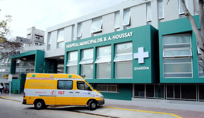

Sucursales
Sanatorio Colegiales
El Sanatorio Colegiales se compromete con la Seguridad del Paciente en el marco de su sistema de administración de riesgos, brindando a los pacientes y sus familias la protección de sus derechos y la minimización de riesgos de la atención en salud. El objetivo es promover la cultura de seguridad en el ámbito justo, educando a sus colaboradores en el conocimiento y desarrollo de prácticas seguras. Cuenta con un sistema de auditoría, reporte y búsqueda activa de eventos e incidentes con el fin de identificar situaciones que tomen acciones para el mejoramiento continuo de nuestros servicios de salud.
Hospital Garraham
Somos un Hospital Nacional Especializado en Pediatría de Alta Complejidad que asiste a niños, niñas y adolescentes de 0 a 15 años; siendo referentes nacionales, regionales e internacionales. Brindamos excelencia en calidad de atención centrada en las personas, buscando satisfacer la experiencia del paciente, su entorno familiar y el equipo de salud. Tenemos una organización asistencial basada en cuidados progresivos con jerarquización de la actividad interdisciplinaria realizando un abordaje sanitario integrador de los pacientes y cuidando sus aspectos sanos. Promovemos el empoderamiento de las personas en la coproducción de la toma de decisiones, sustentadas en las mejores prácticas, favoreciendo la autonomía y respetando las diversidades.
Hospital Municipal Vicente López
El Hospital Municipal Vicente López, tiene como misión brindar un servicio de salud de alta calidad en todas las especialidades médicas, tratamientos y diagnósticos. Está orientado a la mejora de la calidad del servicio y seguridad del paciente.
- Servicios habilitados:
- Imágenes: Ecografía; Ecografía Doppler; Mamografía; TAC;
- Laboratorio
- Consultorios con turno previo: Cirugía General, Plástica y Vascular; Neurocirugía; Proctología; Ginecología; ORL; Oftalmología; Urología; Cardiología; Clínica Médica; Dermatología; Endocrinología; Gastroenterología; Neurología; Pediatría; Nutrición.
- Vacunatorio Lunes a Viernes de 8 a 13 hs. Teléfono 4796-7200. No requiere turno previo.
Hospital de Colegiales
Ubicación: Conde 851, C1426 CABA
Horario de atención: Abierto las 24hs
Telefono: 011 4556-4800
Hospital Garraham
Ubicación: Pichincha 1890, C1245 CABA
Horario de atención: Abierto las 24hs
Telefono: 011 4122-6000
Hospital Municipal B.A.Houssay
Ubicación: Pres. Hipólito Yrigoyen 1757, Florida, Provincia de Buenos Aires
Horario de atención: Abierto las 24hs
Telefono: 011 4796-7200